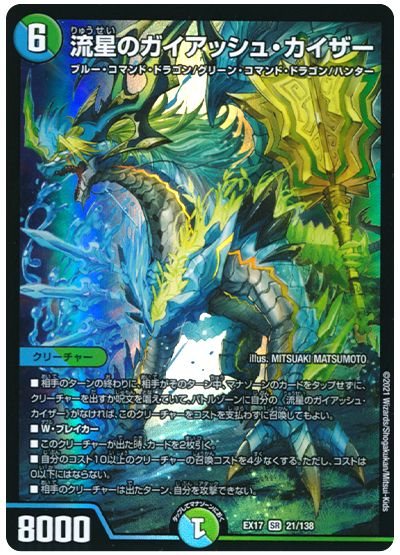
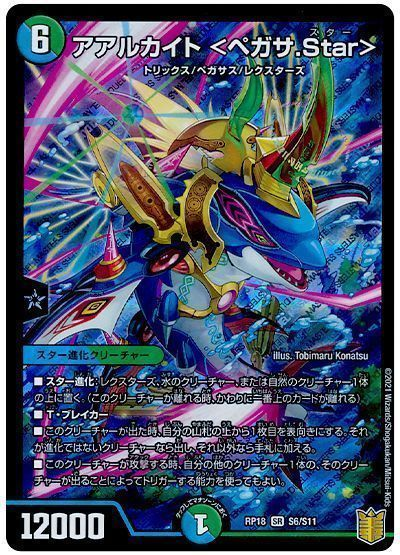
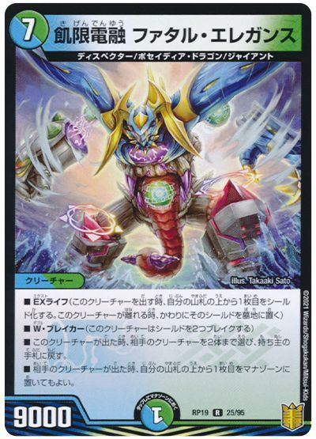
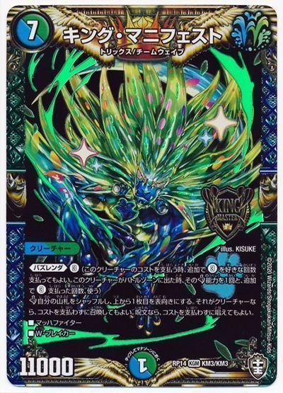
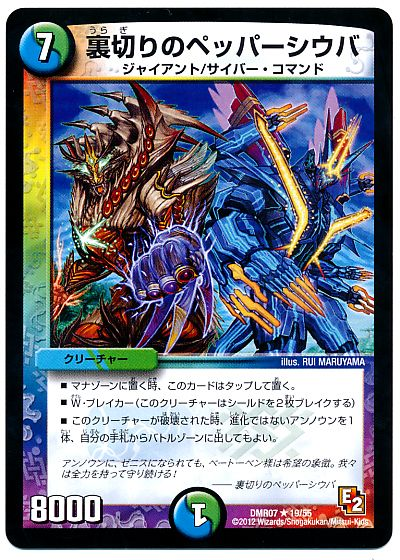

今回は神歌キリコを使うため10コスト以上が多いため結構あり。牽制にもなるが狙われやすくなる。

出た時でガチャができるため結構ありだが進化元の用意がネック

相手の展開でマナ加速ができるのがありがたい。採用するならアジサイ-2は入れたい。

採用候補筆頭。出ても強いし、相手からの警戒度も結構低め。言い訳も(運だから)できる。

安価かつゼニスを積んでいるため採用はあり。ただし破壊が苦手なデッキのため同破壊するのかがネック。